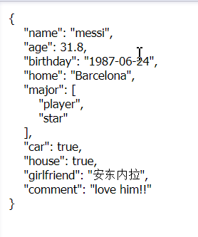

org.json、gson 等 jar 包的下载：
链接：https://pan.baidu.com/s/1sjMDVajQgR-ihFvAZ54ymg
提取码：dt84
1.了解 JSON
它的全称为 JavaScript Object Notation。
①优点
- JSON 是一种与开发语言无关的、轻量级的数据交换格式。
| 它采用完全独立于编程语言的文本格式来存储和表示数据。
| 最初来自 JS，后来几乎每种常用语言都有处理 JSON 的 API，它支持多种服务器端语言，便于服务器端的解析。 - JSON 是行业内使用最为广泛的数据传输格式。
| 调用服务端 API 时会使用 JSON 作为返回格式。 - JSON 是数据存储的一种格式，格式简单、易于读写、占用带宽小。
| 它易于易于程序的解析和生成，并能有效的提升网络传输效率。
②缺点
- 要求字符集必须是 Unicode，受约束性强。
③实例
- { }：标识一个 JSON 对象(即结构体)。
| { } 中包含键值对结构，key 必须是 String 类型，value 为任何基本类型、对象或数组，多个键值对之间用逗号分隔。 - []：数组 Array，用逗号分隔元素。
| 在 Java 中，可用集合、string[] 等定义。 - 元素基本类型：String、number、true、false、null。
| JSON 中的数字没有浮点数、整数 … 之分。但在 Java 中，JSONObject 的 put 方法会自动区分不同的数字格式。这是一种 JSON 原生数据格式到 Java 数据格式的映射关系。
| 标准 JSON 中不支持任何形式的注释。
| JSON 中没有日期 / 时间数据格式。

2.org.json 包的使用
①使用 JSONObject 构建 JSON 对象
1 | package json; |
②使用 Map 构建 JSON 对象
1 | package json; |
③使用 Javabean 构建 JSON 对象(推荐使用)
1 | package json; |
1 | package json; |
④从文件中读取 JSON
需要将此 JSON 文件放在工程根目录下
1 | package json; |
3.GSON 的使用
Google 提出的开源项目(第三方工具)，相比于 JSONObject，功能更强大、性能更出色、使用方式更简单。
①使用 Javabean 构建 JSON 对象(推荐使用)
1 | package gson; |
1 | package gson; |
②个性化定制 JSON
1 | package gson; |
1 | package gson; |
③从文件中读取 JSON + 将 JSON 数据反解析为 Javabean 对象
将 JSON 数据反解析为 Javabean 对象时，GSON 支持将 String 类型的日期转换为日期类型。
GSON 会将 JSON 数据中的数组自动转换为 Javabean 对象中的集合类型。
1 | package gson; |
1 | package gson; |
org.json 是 Android SDK 的官方库。
GSON 应用于服务端开发，功能更强大。
附录
- 我的个人博客：messi1002.top
- 如有错误或疑惑之处 请联系 wjymessi@163.com